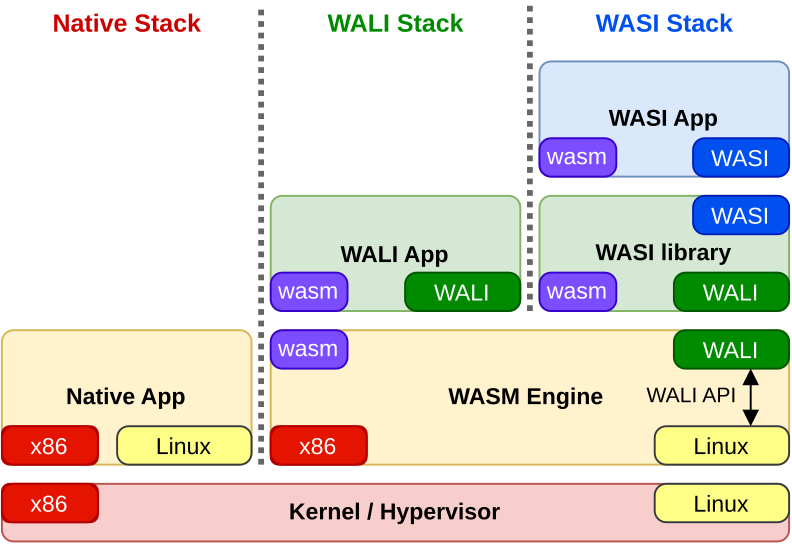
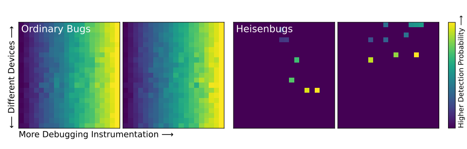
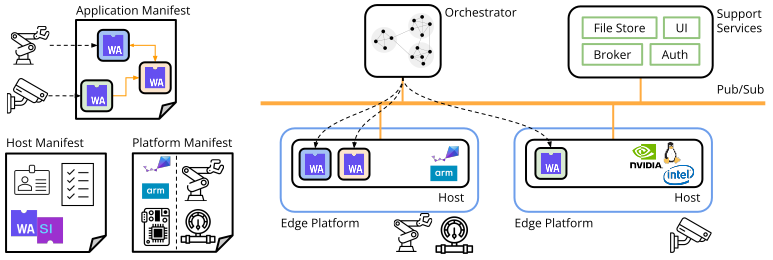

Publications
Empowering WebAssembly with Thin Kernel Interfaces
Wasm adoption for new domains is often hindered by the lack of standard system interfaces. We show support for the Linux and Zephyr syscall interface in Wasm engines allowing numerous languages and applications to target Wasm out-of-the-box while preserving ISA portability and safety. Check out our ports of Bash, ncurses, openssh, and plenty of other cool software!

Unveiling Heisenbugs with Diversified Execution
The detection of quirky Heisenbugs are influenced by numerous factors including (but not limited to) hardware platforms and, strangely, the extent of instrumentation used by debuggers themselves. We propose a debugging methodology that harnesses diversity across platforms and the debugger's instrumentation to enable low-overhead debugging at scale. Skim our paper for a characterization of over 100 numerous funky bug behaviors!

Silverline: Lightweight Virtualization and Orchestration of Distributed Systems
Real-time cyber-physical systems naturally lend themselves to distributed compute, but are often programmed monolithically to curb complexity and safety exploits. With Silverline, we explore programmability and orchestration of distributed applications transparently across wide range of hardware using WebAssembly for lightweight virtualization.

Interference-aware Edge Runtime Prediction with Conformal Matrix Completion
Performance prediction in heterogeneous edge computing systems is critical for effective resource allocation and cost optimization. We formulate this problem as matrix completion, which can be extended to handle complex, edge-specific concerns such as interference and uncertainty quantification accurately.